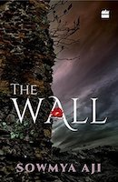
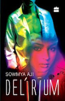
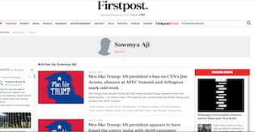
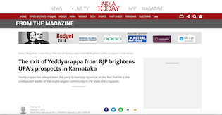
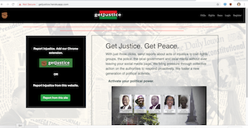
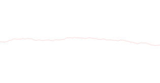
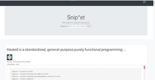
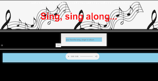

● Each of my novels is a different genre: romantic thriller, literary fiction and political thriller. Fantasy is next. Watch out!
● I've been writing creatively since the age of 10 -- poetry, plays, short stories, serials and novels.
My novels:
Cinder-ella
When minister Sarthak Maadara, charming and suave, walks into a slum in Bengaluru, he sets off deep political intrigue, violent ideological battles, potent gang wars in the teeming life of the unreported and neglected underbelly of India's Silicon city. This gritty political thriller gets as real as it can, living the grim life of the modern-day Cinderella who protects her men and her ideals. Is this a fairy tale that can end well?
The Wall
A stone wall at the periphery of a village somewhere in Karnataka guards a dangerous mystery. Yet, four generations of women from the headman's family helpless and spirited, headstrong and weak with desire have a wayward fascination with it. And with Annaiah who comes, some say, from across the wall. Tradition and subversion coexist with superstitions and the slow advent of modernity in this powerful novel where time is a wilful beast and the gods walk among us.
Delirium
Even as Anjana is swept off her feet into a whirlwind romance, the reporter within her sniffs out the biggest scoop of the season. All too soon, she is neck-deep in trouble with her bosses and the cricket board, struggling to make sense of the sordid world of steroids and celebs. Will anjana give up the delicious young man she is hooked on to? And does she even want to? Sinful and alluring, Delirium is a heady cocktail of intrigue, temptation and betrayal.
Short story:
Another Time Another Place
He still keeps her letter in his pocket—the letter from his beloved—even though the words in it were clear and final: It was over. So what if he missed her a little too much and had read that letter every single day for the last three years? He tried to go about his daily businesses like any other person—eventually, he would be capable of managing without her, right?—but, every now and then, sadness engulfed him. What choice did he have?
Media about my fiction
● I've interviewed four former Prime Ministers of India and 12 chief ministers of different states.
● I mentored and trained with five generations of colleagues, worked with diverse and remote teams. Had a lot of fun!
My news reports:
The Times of India
From 2000-2008, I reported and learnt the job at the world's largest circulated English daily, The Times of India. TOI also carried my reports from the sister concern Economic Times, India's top financial daily, from 2014-2018.
First Post
For a few months in 2018, I researched and wrote a column on President Donald Trump from the US for the Indian website First Post, which pioneered digital news publication in India.
The Economic Times
The highpoint of my career was when I broke political and policy news for India's top 'Pink Paper' from 2014 to 2018. Between March to May 2018, in the space of less than 60 days, I wrote 200 news stories, analysis and interviews on the Karnataka elections travelling over 10,000 kms (over 6,000 miles).
India Today
From 2008 to 2013, I worked for the Living Media group for Mail Today and India's top magazine, India Today. Some of my stories are still available online.
● I have built eight responsive and stylish apps for the web and the mobile using Python, Django, Javascript, CSS and HTML.
● Designed PostgreSQL, SQLite databases in my apps. Used APIs and Ajax for quick and responsive pages.
● Am working with Code for Cary and Code for Durham on two interesting public apps.
My Apps:
getJustice
This webApp and Chrome Extension lets you
report instances of injustice on social media to the authorities in 30 seconds.
[JavaScript, Python, Django, Bootstrap, external SMTP email server]
Read: How we did the project
Presentation Video
Live App
Full
Code
Pathfinder
 If you want to find the best path through the
mountains, use my program! [Python]
Read: How I did the project
Full Code
Snip^pet

This web page provides users with frequently used code snippets for reuse in their applications. [Python, JavaScript, REST API, Bulma, Django]
Read: How we did the project
Live App
Full code
Sing Along

Here I use the iTunes API to let you listen to your favorite music from our cool web-site, your
own compu-radio.[JavaScript, API]
Read: How I did the project
Full Code